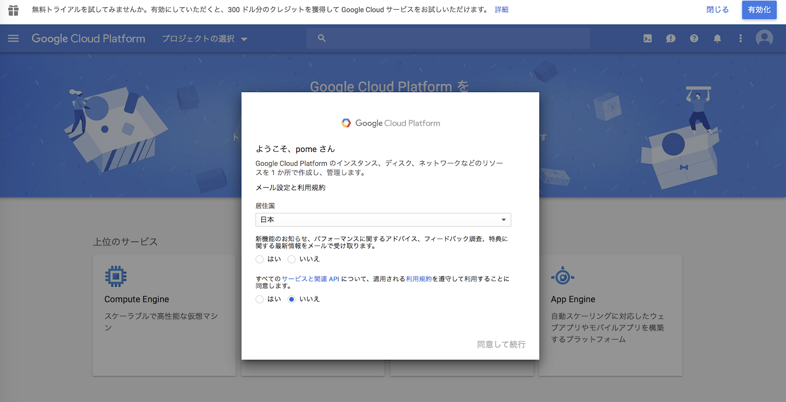
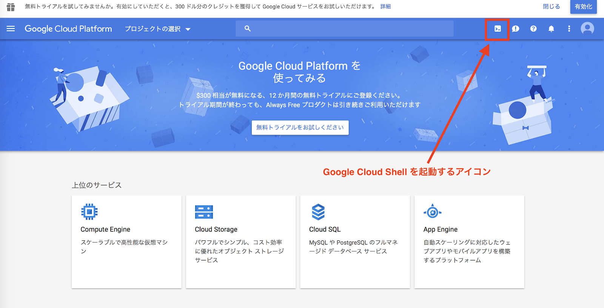
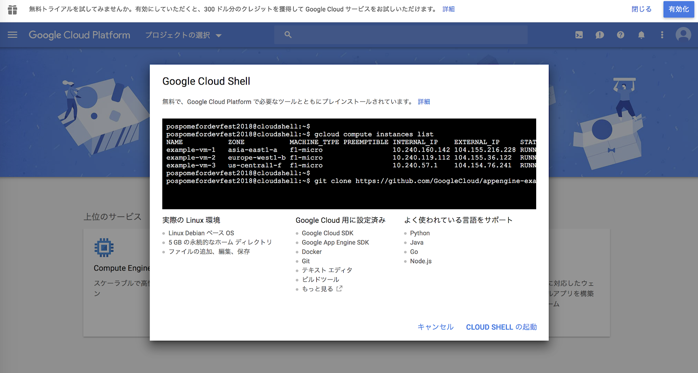
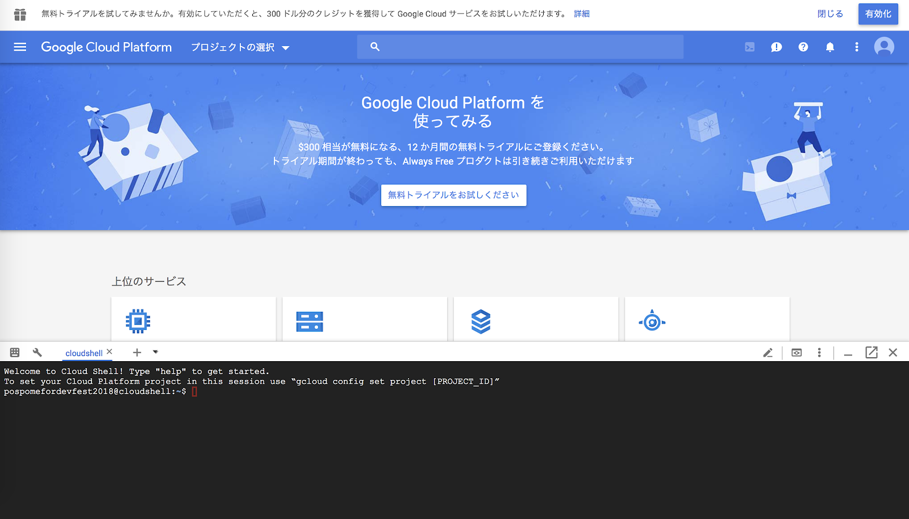
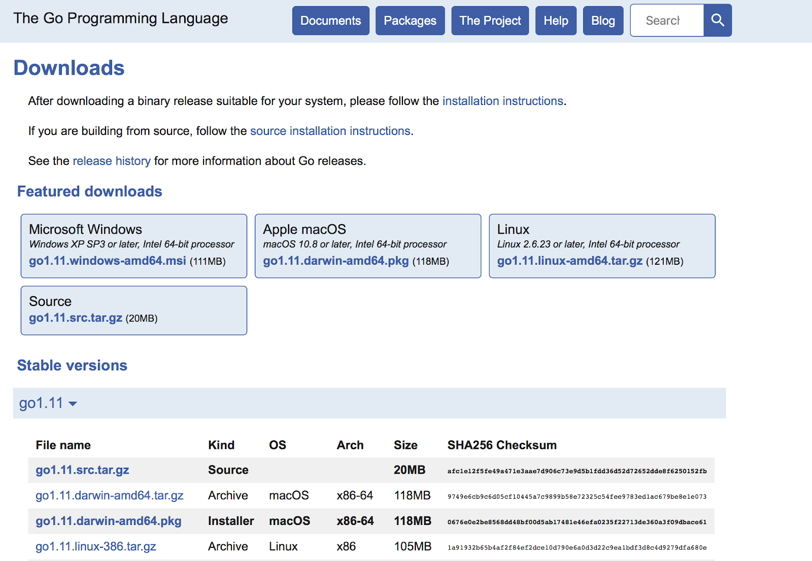
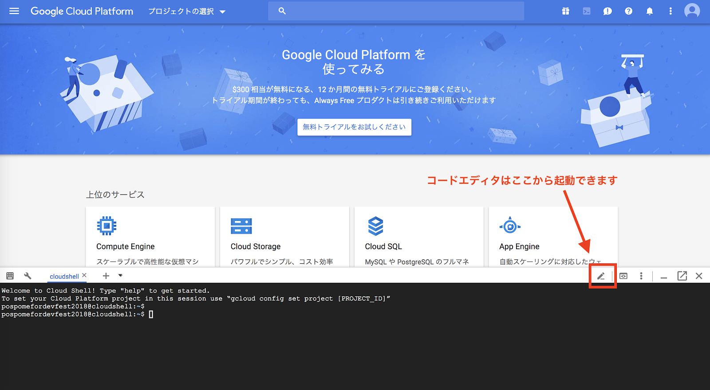
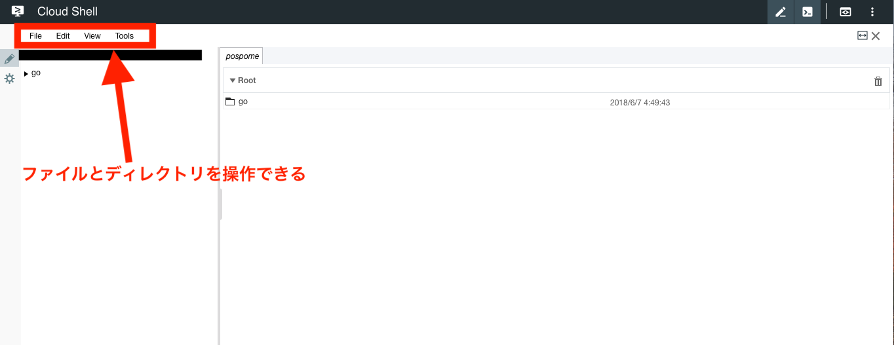
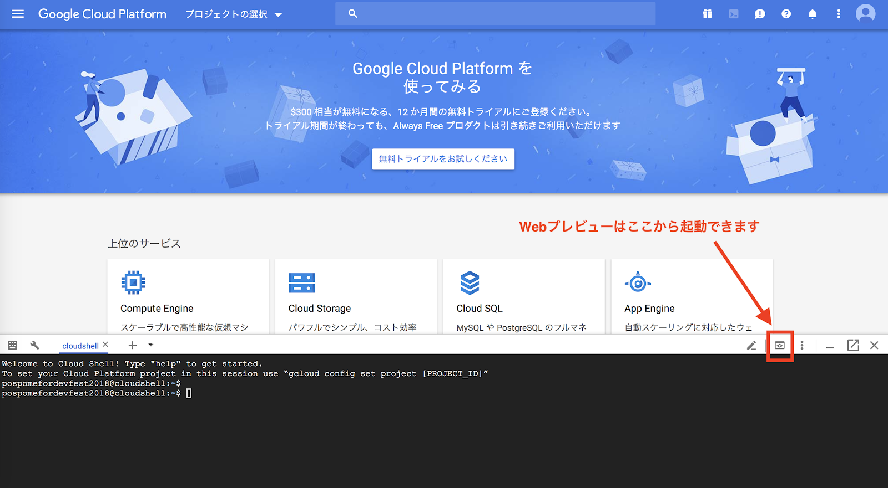
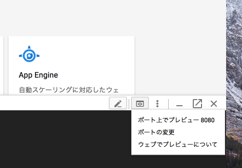

Google Cloud Platformが提供するサービスの1つです。Google Cloud Shellはブラウザ上で動作するシェルであり、Google Cloud Platformが提供する各クラウドリソースに対してアクセスすることができます。Google Cloud Shellは無料で利用することができます。
Google Cloud ShellにはGoがプリインストールされているので、Goの開発環境を構築することなくGoでコードを書くことができます。
Google Cloud Shellを利用するにはGoogle Cloud Consoleへアクセスする必要があります。次のURLからGoogle Cloud Consoleへアクセスしましょう。
Google Cloud Consoleを利用したことがない方は以下の規約同意画面が表示されます。利用規約を確認し、同意できる場合のみ画面の一番下にある"すべてのサービスと関連APIについて、適用される利用規約を遵守して利用することに同意します。"の選択肢を"はい"に選択し、"同意して続行"を選択してください。

Google Cloud Consoleにアクセスできたら、画面上の右上にある Google Cloud Shell を起動するアイコンを選択してください。

Google Cloud Shellを起動したことがない方は以下の画面が表示されます。画面右下の"CLOUD SHELL の起動"を選択してください。

Google Cloud Shellの起動が成功すると画面下にコマンドラインが表示されます。

Google Cloud ShellではGitがプリインストールされています。git versionでGitのバージョンが表示されることを確認しましょう。
$ git version
早速Goがインストールされているかを確認しましょう。
Google Cloud Shellでgo versionを実行し、Goのバージョンを確認しましょう。次のように表示されるはずです。プリインストールされているバージョンは異なる可能性があります。
$ go version
本セクションではGoogle Coud ShellにプリインストールされているGoとは異なるバージョンのGoをインストールする方法を説明します。プリインストールされているバージョンとは異なるバージョンのGoが必要な場合は、こちらを参考にインストールしてください。
次のURLがGoバイナリの一覧です。アクセスしてみましょう。

Google Cloud Shellでは次のバイナリが対象になります。バージョンは任意のものを選択してください。インストール対象がGo 1.9.7 の場合、バイナリは"go1.9.7.linux-amd64.tar.gz"です。
Kind | Archive |
OS | Linux |
Arch | x86-64 |
インストール対象のバイナリを特定できたらダウンロードしましょう。ダウンロードにはwgetコマンドとtarコマンドを利用します。次のコマンドを実行しましょう。バイナリのファイル名はインストール対象のものに変更してください。
$ wget -O - https://dl.google.com/go/go1.9.7.linux-amd64.tar.gz | tar zxvf -
コマンドを実行するとgoというディレクトリができているはずです。
$ ls go
ダウンロードしたGoのバージョンを確認してみましょう。ダウンロードしたGoのバイナリを明示的に指定してgo versionを実行します。プリインストールされているGoとは別のバージョンがj表示されれば成功です。
$ .go/bin/go version go version go1.9.7 linux/amd64
ダウンロードしたGoのバイナリを明示的に指定することで異なるバージョンのGoを利用することができます。
ダウンロードしたGoのバイナリをgoコマンドで実行するように設定することも可能です。
まずは環境変数のGOROOTを取得したGoのバイナリのパスで上書きします。次の例ではホームディレクトリにダウンロードしたgoディレクトリを$GOROOTに上書きしています。
$ export GOROOT=$HOME/go/
最後に$GROOTを$PATHに追加しましょう。
$ export PATH=$GOROOT/bin:$PATH
これで設定は完了です。go versionを��行してみましょう。次のようにダウンロードしたGoのバイナリのバージョンが表示されれば成功です。
$ go version go version go1.9.7 linux/amd64
Google Cloud Shellではターミナル上で動作するVimやEmacsがプリインストールされていますが、備え付けのコードエディタも存在します。コードエディタはコマンドラインの右上にあるアイコンから起動できます。VimやEmacsに慣れていない方はコードエディタを使うと良いでしょう。

コードエディタが起動すると次のような画面が表示されます。左上のメニューからディレクトリ、ファイルの作成などができます。

Google Cloud ShellにはWebでプレビューする機能が備わっています。WebプレビューはGoogle Cloud Shellが動作するサーバの特定のポートにブラウザからHTTPSでアクセスできる機能です。これによってGoogle Cloud Shell内でWebサーバを立ち上げてブラウザからアクセスすることができます。Webプレビューはコマンドラインの右上にあるアイコンから起動できます。

Webプレビューは任意のポートを利用することができます。
ブラウザを利用するハンズオンやWebサーバを利用するハンズオンではWebプレビュー機能を利用することで動作確認が可能です。
以上で Google Cloud Shellのセットアップは終わりです。Google Cloud Shellを利用してGoに触れてみましょう！